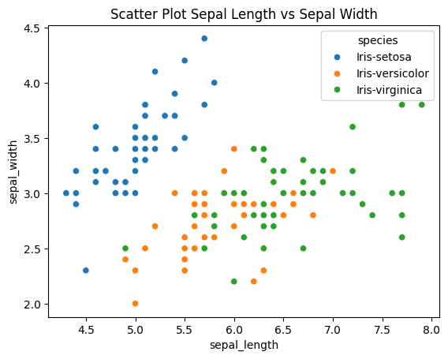
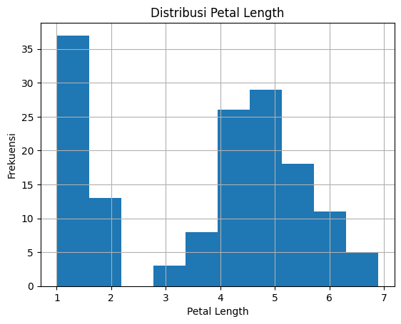
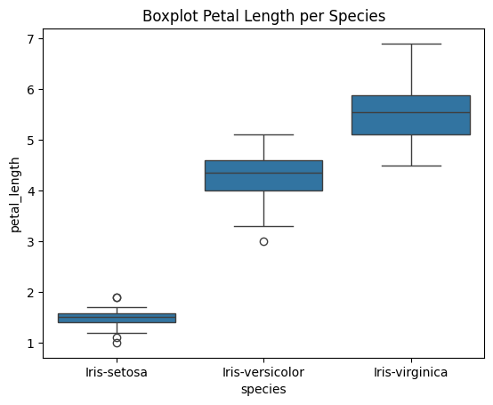

TUGAS 1#
eksplorasi data iris
cari data deksriptif data
visualisasi data
Impor data#
import pandas as pd
import numpy as np
import matplotlib.pyplot as plt
import seaborn as sns
Read Dataset#
df = pd.read_csv('iris.csv')
df
---------------------------------------------------------------------------
FileNotFoundError Traceback (most recent call last)
/tmp/ipykernel_7764/2457229466.py in <cell line: 0>()
----> 1 df = pd.read_csv('iris.csv')
2 df
/usr/local/lib/python3.12/dist-packages/pandas/io/parsers/readers.py in read_csv(filepath_or_buffer, sep, delimiter, header, names, index_col, usecols, dtype, engine, converters, true_values, false_values, skipinitialspace, skiprows, skipfooter, nrows, na_values, keep_default_na, na_filter, verbose, skip_blank_lines, parse_dates, infer_datetime_format, keep_date_col, date_parser, date_format, dayfirst, cache_dates, iterator, chunksize, compression, thousands, decimal, lineterminator, quotechar, quoting, doublequote, escapechar, comment, encoding, encoding_errors, dialect, on_bad_lines, delim_whitespace, low_memory, memory_map, float_precision, storage_options, dtype_backend)
1024 kwds.update(kwds_defaults)
1025
-> 1026 return _read(filepath_or_buffer, kwds)
1027
1028
/usr/local/lib/python3.12/dist-packages/pandas/io/parsers/readers.py in _read(filepath_or_buffer, kwds)
618
619 # Create the parser.
--> 620 parser = TextFileReader(filepath_or_buffer, **kwds)
621
622 if chunksize or iterator:
/usr/local/lib/python3.12/dist-packages/pandas/io/parsers/readers.py in __init__(self, f, engine, **kwds)
1618
1619 self.handles: IOHandles | None = None
-> 1620 self._engine = self._make_engine(f, self.engine)
1621
1622 def close(self) -> None:
/usr/local/lib/python3.12/dist-packages/pandas/io/parsers/readers.py in _make_engine(self, f, engine)
1878 if "b" not in mode:
1879 mode += "b"
-> 1880 self.handles = get_handle(
1881 f,
1882 mode,
/usr/local/lib/python3.12/dist-packages/pandas/io/common.py in get_handle(path_or_buf, mode, encoding, compression, memory_map, is_text, errors, storage_options)
871 if ioargs.encoding and "b" not in ioargs.mode:
872 # Encoding
--> 873 handle = open(
874 handle,
875 ioargs.mode,
FileNotFoundError: [Errno 2] No such file or directory: 'iris.csv'
Read 5 Data#
df.head()
| sepal_length | sepal_width | petal_length | petal_width | species | |
|---|---|---|---|---|---|
| 0 | 5.1 | 3.5 | 1.4 | 0.2 | Iris-setosa |
| 1 | 4.9 | 3.0 | 1.4 | 0.2 | Iris-setosa |
| 2 | 4.7 | 3.2 | 1.3 | 0.2 | Iris-setosa |
| 3 | 4.6 | 3.1 | 1.5 | 0.2 | Iris-setosa |
| 4 | 5.0 | 3.6 | 1.4 | 0.2 | Iris-setosa |
Information Dataset#
df.info()
<class 'pandas.core.frame.DataFrame'>
RangeIndex: 150 entries, 0 to 149
Data columns (total 5 columns):
# Column Non-Null Count Dtype
--- ------ -------------- -----
0 sepal_length 150 non-null float64
1 sepal_width 150 non-null float64
2 petal_length 150 non-null float64
3 petal_width 150 non-null float64
4 species 150 non-null object
dtypes: float64(4), object(1)
memory usage: 6.0+ KB
Ukuran Dataset#
df.shape
(150, 5)
Eksplorasi Nama Kolom#
df.columns
Index(['sepal_length', 'sepal_width', 'petal_length', 'petal_width',
'species'],
dtype='object')
Statistik Deskriptif Data#
df.describe()
| sepal_length | sepal_width | petal_length | petal_width | |
|---|---|---|---|---|
| count | 150.000000 | 150.000000 | 150.000000 | 150.000000 |
| mean | 5.843333 | 3.054000 | 3.758667 | 1.198667 |
| std | 0.828066 | 0.433594 | 1.764420 | 0.763161 |
| min | 4.300000 | 2.000000 | 1.000000 | 0.100000 |
| 25% | 5.100000 | 2.800000 | 1.600000 | 0.300000 |
| 50% | 5.800000 | 3.000000 | 4.350000 | 1.300000 |
| 75% | 6.400000 | 3.300000 | 5.100000 | 1.800000 |
| max | 7.900000 | 4.400000 | 6.900000 | 2.500000 |
Jumlah Setiap Species#
df['species'].value_counts()
| count | |
|---|---|
| species | |
| Iris-setosa | 50 |
| Iris-versicolor | 50 |
| Iris-virginica | 50 |
Scatter Plot#
sns.scatterplot(x='sepal_length', y='sepal_width', hue='species', data=df)
plt.title("Scatter Plot Sepal Length vs Sepal Width")
plt.show()

Histogram#
df['petal_length'].hist()
plt.title("Distribusi Petal Length")
plt.xlabel("Petal Length")
plt.ylabel("Frekuensi")
plt.show()

Boxplot#
sns.boxplot(x='species', y='petal_length', data=df)
plt.title("Boxplot Petal Length per Species")
plt.show()

Hasil Eksplorasi Data Iris#
Dataset memiliki 150 data bunga iris
Terdapat 3 species bunga:
Iris-setosa
Iris-versicolor
Iris-virginica
Setiap species memiliki 50 data.
Variabel numerik yang dianalisis:
Sepal Length
Sepal Width
Petal Length
Petal Width
Visualisasi menunjukkan setiap species memiliki karakteristik ukuran bunga yang berbeda.